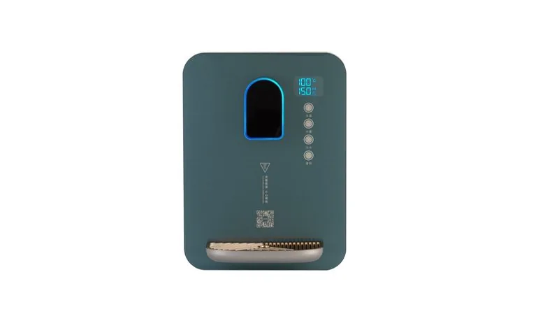

Dispensador de água MT-900G
Wall-mounted pipeline water dispenser with 5 stages of water volume (150ml–850ml) and 5 levels of water temperature (25°C–100°C). 316L titanium gold stainless steel heating element. Child safety lock....
Enviar consulta
Dispensador de água MT-600DG (Dark Green Water Dispenser MT-600DG) é um produto da categoria Bebedouro de Água para Water Dispenser, com Mount: Wall-mounted; Color: Dark Green; Power: 2200W. A Yuchen Water apoia marca própria, etiquetas de filtro, caixas de exportação e configuração OEM/ODM conforme o projeto.
| OEM/ODM | Dispensador de água MT-600DG |
|---|---|
| PP / CTO / GAC / UF / RO | OEM |
| 10 / 20 / 30 / 40 inch | OEM |
| μm / GPD / LPH | OEM |
| FOB / CIF / DDP | ✓ |
| ISO 9001 / CE / SGS | ✓ |
| MOQ | OEM |
← Voltar a todos os produtos Produtos
Produtos selecionados podem ser fornecidos ou testados conforme NSF/ANSI 42, 53 e 58. Documentos ISO 9001, CE, SGS e relacionados ao Halal disponíveis mediante solicitação.
O MOQ para cartuchos padrão de 10" PP, CTO e GAC começa em 1.000 unidades por SKU para itens em estoque, 3.000 unidades para luvas impressas OEM e 5.000 unidades para moldagens ODM totalmente personalizadas (tampa final privada, anel O-ring personalizado, embalagem retrátil de marca). Membranas UF e membranas RO 75/100/400 GPD geralmente têm MOQ de 500 unidades. Dispensadores de parede têm MOQ de 100 unidades. Pedidos de teste menores são negociáveis para novos distribuidores.
Nosso centro de fabricação fica em Yuanhua Town, Haining City, Zhejiang Province, China — aproximadamente a 90 minutos de carro do Aeroporto de Shanghai Hongqiao (SHA) e do Aeroporto de Hangzhou Xiaoshan (HGH). A instalação de mais de 20.000 m² abriga linhas dedicadas de extrusão de PP melt-blown, prensas de CTO carbon block sinterizado, salas limpas de montagem de membrana UF/RO e linhas de montagem SMT de dispensadores. Recebemos visitas agendadas de compradores, inspeções de terceiros (SGS, BV, TÜV) e auditorias de qualificação OEM.
Cartuchos padrão PP, CTO, GAC e T33 em cores de estoque são enviados dentro de 7 a 10 dias. Cartuchos de marca própria OEM com impressão personalizada: 20 a 25 dias a partir da aprovação da arte. Elementos de membrana RO/UF: 15 a 20 dias. Dispensadores de parede e de mesa: 30 a 45 dias, dependendo da personalização. O carregamento do contêiner é normalmente 1 × 20'GP (≈ 80.000 cartuchos) ou 1 × 40'HQ (≈ 200 dispensadores). Termos FOB Shanghai ou Ningbo; Termos CIF, CFR e DDP disponíveis.
Sim. Oferecemos uma gama completa de membranas de osmose reversa: 50 GPD, 75 GPD, 100 GPD, 200 GPD, 400 GPD, 600 GPD para sistemas residenciais sob a pia, além de elementos de alta rejeição de 300 GPD, 400 GPD e 600 GPD para dispensadores de água comerciais leves. Elementos industriais 4040 e 8040 (equivalentes a BW30, SW30) estão disponíveis para estações de tratamento de água, diálise, enxágue de semicondutores e aplicações farmacêuticas. Taxa de rejeição de sal ≥ 96–99%.
Os filtros de sedimento PP melt-blown usam fibras de polipropileno termicamente ligadas para remover contaminantes particulados (ferrugem, areia, silte) de 0,5 a 50 microns. Os filtros de bloco de carvão sinterizado CTO (cloro, gosto e odor) usam carvão ativado comprimido de casca de coco ou à base de carvão para remover cloro livre, cloraminas, VOCs, pesticidas e melhorar o sabor — normalmente 5 µm ou 10 µm. Os filtros de carvão ativado granular GAC usam grânulos de carvão soltos para maior tempo de contato na adsorção de cloro e costumam ser o segundo estágio em sistemas RO de 5 estágios. Fabricamos os três em escala industrial com total rastreabilidade.
Wall-mounted pipeline water dispenser with 5 stages of water volume (150ml–850ml) and 5 levels of water temperature (25°C–100°C). 316L titanium gold stainless steel heating element. Child safety lock....
Enviar consulta
Wall-mounted pipeline water dispenser with 2200W rated power and fast 3-second heating. Whole glass panel with matte spray plastic parts. Wholesale factory supply, customizable for OEM/ODM. Selected...
Enviar consulta
High-power vertical water dispenser with 304 stainless steel tank and 1KW heating power. LED digital screen. Wholesale factory supply, customizable for OEM/ODM. Selected NSF/ANSI test options and ISO/CE/SGS...
Enviar consulta
The wall mounted water dispenser is designed for compact drinking water installations in offices, schools, clinics, apartments and public service areas. It can be matched with PP, CTO, GAC, UF or RO...
Enviar consulta